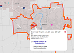

Finding data to get the proces started
Iowa City is slated to expand food truck operations through a new city ordinance that will
hopefully be adopted (story).But, the question is where can food trucks operate safely given these new guidlines?
First, a directory/list of restaurants in Iowa City was needed (Found here),since foodtrucks are prohibited from operating within 150 feet of a restaurant. This list doesn't include KFC, McDonalds, or similar type estblishments.
City boundary files were also needed to geofence the analysis to Iowa City (University Heights was included as well). A Statewide of shapefile of incorporated cities can be found here. Using a simple query, Iowa City and University heights can be pulled out of the data.
Finally, employment data can help inform where food trucks can optimally locate over the lunch hours. Nicely formatted data can be pulled within a geofenced area using OnTheMap

Screenshot selecting the area for analysis
×
Editing and pulling relevant data
Addresses are needed for the geocoding of these locations, which can be obtained using python and the Beautifulsoup package to parse the html and write relevant information to a csv. Beeautiful soup can easily be installed with pip using pip install BeautifulSoup. The baked in csv and urllib2 packages are also needed to get the process rolling.
########################
#Import python modules
########################
from BeautifulSoup import BeautifulSoup
import urllib2
import csv
##############################################################
#Grab the url, open it and assign it to the variable "content"
##############################################################
url = 'http://www.iowacitymenus.com/'
page = urllib2.urlopen(url)
content = urllib2.urlopen(url).read()
#Assign soup variable to the cotent run through beuatifule soup
#--------------------------------------------------------------
soup = BeautifulSoup(content)
#Create a dictionary variable and pull all the list elements from
the soup content. The location/adresses were all found to be housed
#within li tags.
#----------------------------------------------------------------
dict = {}
locs = soup('li')
##############################################################
#Create a CSV file where all the addresses will be written to.
##############################################################
with open('ICEats.csv', 'wb') as csvfile:
writer = csv.writer(csvfile, delimiter=',')
writer.writerow(('Name','Address'))
for loc in locs:
if loc.b == None:
pass
else:
#The addresses were in list elements, but housed within
#break elements makes pulling the necessary informaiton
#a bit difficult. So, some string manipulation was needed
#to get the needed info.
#---------------------------------------------------------
name = str(loc.b).strip('<>b/>')
line = str(loc)
s = line.find('br') + 5
place = line[s:]
e = place.find('br') - 1
place = place[:e]
dict[name] = place
writer.writerow((name,place))
csvfile.close()
With a csv of addresses (only a few of which required manual cleaning) the Google Geocoding API (nicely housed within Denis Carriere's geocoder module) can be used to obtain long/lat coordinates of each location, simply install using pip install geocoder
#######################
Import python modules
#######################
mport geocoder
mport time #needed to help prevent hitting the query limit
mport csv
mport arcpy
#######################################################
grab the table as input with empty lat and long fields
#######################################################
able = arcpy.GetParameterAsText(0)
#############################################################
Create a CSV file where all the addresses will be written to.
#############################################################
ith with arcpy.da.UpdateCursor(table,"*") as cursor:
for row in cursor:
#sleep .2 seconds to avoid hitting query limit of 5 request per second.
timer.sleep(0.2)
try:
#third column is the one with addresses, run it through the geocoder
loc = geocoder.google(row[2])
row[3] = loc.lat
row[4] = loc.lng
cursor.updateRow(row)
except:
pass
Spatial analysis of the data
ESRI ArcMap was utilized to do the heavy lifting for analyzing the spatial data. The majority of the hang up was the fact that Iowa City lacks an overlay of zoning layers. Invidiual parcels are available with a zoning classificaiton, but this was less than ideal (for reaons that will become apparent shortly)
What was done in ArcMap
- Create a 150 buffer around all restaurant locations
- Delineate the Downtown and Northside Districts
- Identify residential parcels and fill in road right of way areas
- Dissolve all the restricted areas into one feature
- Convert shapefiles to topojson for web display
Creating a 150 buffer around restaurants is stratigh forward, and uses readily available geopcrocessing tools in ArcMap. The downtown districts were manually created using the Iowa City Zoning Map (warning, it's a HUGE PDF!)
Problems with parcels
A simple zoning overlay was all that was needed. However, only a parcel level shapefile was available. Parcels do not lend themselves to dissolving by zoning type well since all the of the road right-of-way is essentially empty.
In order to get around this issue the road areas were isolated, and split using road centerline data (available here).This data was merged with the parcel data that had been previously dissolved by zoning type, and a neighbor table was generated. From this, a zoning classification was assigned to each roadway based on the zoning type of the largest area bordering each road.
A little bit of manual cleaning of boundaries, and the data is ready for conversion. Converting ESRI shapefiles to geojson is easy using OSGEO in the command prompt
$ ogr2ogr -f GeoJSON -t_srs crs:84 [name].geojson [name].shp
The GeoJSON can then be dragged into MapShaper to be simplified and exported as a TopoJSON, which is much small and loads faster in web pages.
Displaying the data on the web
D3 is an incredibly powerful library for displaying data - particularly spatial data.
//Width and height
var width = 800;
var height = 650;
//temporary empty color that will be used for mouseover and mouseout events
var tempColor;
//zoom behavior
var maxZoomIn = 6,
maxZoomOut = 1;
//Define the map projection
var projection = d3.geo.mercator()
.scale(297838.7704891906)
.center([-91.53614830925925,41.65676282716673]) //projection center
.translate([width/2,height/2]) //translate to center the map in view
//zoom behavior
var zoom = d3.behavior.zoom()
.translate(projection.translate())
.scale(projection)
.scaleExtent([maxZoomOut, maxZoomIn])
.on("zoom", zoomed);
//Define path generator
var path = d3.geo.path()
.projection(projection);
//Create an SVG and append to #map div
var svg = d3.select("#map").append("svg")
.attr("width", width)
.attr("height", height);
//Generate paths based on projection
var path = d3.geo.path().projection(projection);
//Group for the map features
var features = svg.append("g")
.attr("class","features");
//Create zoom/pan listener
var zoom = d3.behavior.zoom().scaleExtent([1, 4]).on("zoom",zoomed);
svg.call(zoom);
//queue data so it loads better
queue()
.defer(d3.json, "FoodTrucks_data/Employment.topojson")
.defer(d3.json, "FoodTrucks_data/OpArea.topojson")
.await(makeMap);
//D3 callback for generating the actualy map features and appending them to the features goup
function makeMap(error, Emp, OpArea){
//group variable to zoom behavior works correctly
var group = svg.append('g')
.attr('id','mapzoom')
var Emp = group.append('g').attr("id","Emp")
.selectAll("path")
.data(topojson.feature(Emp, Emp.objects.collection).features)//generate features from topoJSON
.enter()
.append("path")
.attr("d", path)
.attr("class","Emp")
.attr("fill", function(d){
if (d.properties.Classes <= 3) {
color = '#2892C7'
} else if (d.properties.Classes == 4){
color = '#A0C29B'
} else if (d.properties.Classes == 5){
color = '#FAFA64'
} else if (d.properties.Classes == 6){
color = '#FA8D34'
} else {
color = '#E81014'
}
return color
})
.style("stroke-width","0.5px")
.style("opacity", 0.70);
var OpArea = group.append('g').attr("id","OpArea")
.selectAll("path")
.data(topojson.feature(OpArea, OpArea.objects.collection).features)//generate features from topoJSON
.enter()
.append("path")
.attr("d", path)
.attr("class","OpArea")
.attr("fill", 'rgb(78,78,78)')
.style("stroke-width","0.5px")
.style("opacity", 0.85);
};
//Update map on zoom/pan
function zoomed() {
d3.select('#mapzoom').attr("transform", "translate(" + zoom.translate() + ")scale(" + zoom.scale() + ")")
.selectAll("path").style("stroke-width", 1 / zoom.scale() + "px" );
}